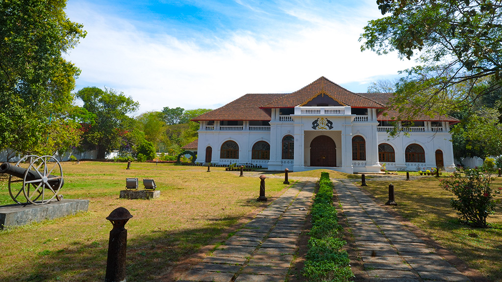
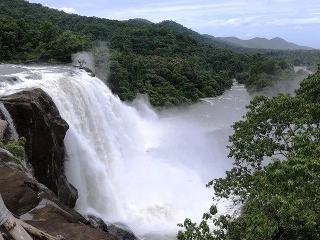
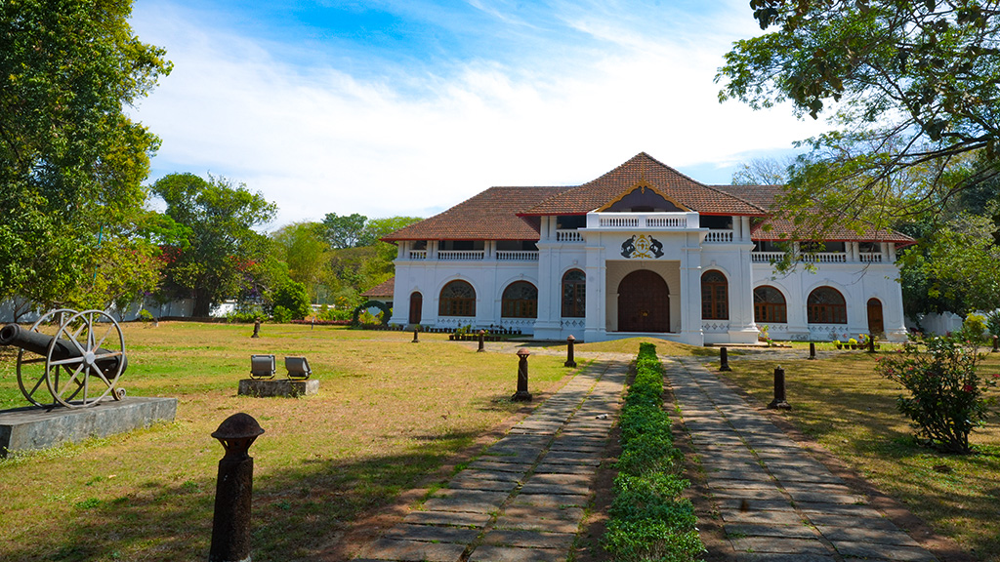
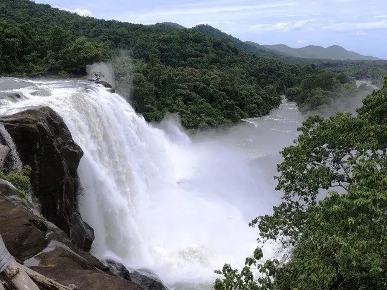

Thrissur formerly Trichur, also known by its historical name Thrissivaperur, is a city and the headquarters of the Thrissur district in Kerala, India. It is the third largest urban agglomeration in Kerala after Kochi and Kozhikode, and the 21st largest in India.[3][4] The city is built around a 65-acre (26 ha) hillock called the Thekkinkaadu Maidaanam which seats a large Hindu Shiva Temple. It is located 304 kilometres (189 mi) north-west of the state's capital city, Thiruvananthapuram. Thrissur was once the capital of the Kingdom of Cochin, and was a point of contact for the Assyrians, Greeks, Persians, Arabs, Romans, Portuguese, Dutch and English.
Let's see some views in Thrissur
 


